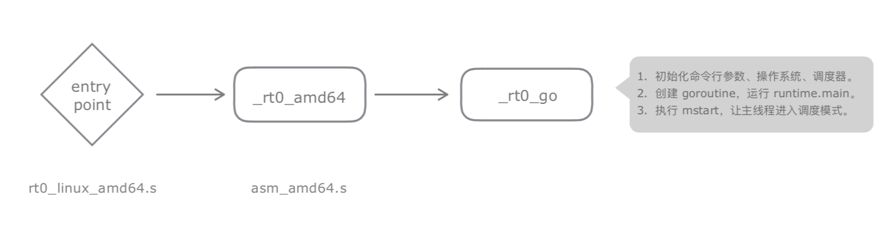
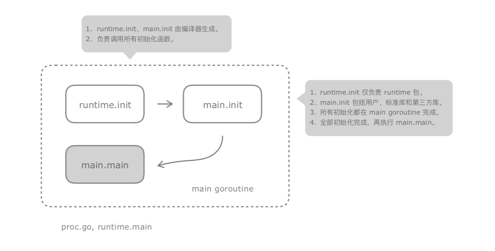

一 运行时追踪
1.0 使用gdb追踪
使用gdb可以直观的追踪到程序运行信息，使用步骤如下：
# 随便编译一个有main函数的go文件
go build -o main
# 在gdb模式下开始追踪
info files # 会输出 Entry point: 0x44ae10
b *0x44ae10 # 断点 这个文件，此时会输入如下信息
Breakpoint 1 at 0x44ae10: file /usr/local/go/src/runtime/rt0_linux_amd64.s, line 8.
info symbol 0x44ae10
_rt0_amd64_linux in section .text
b _rt0_amd64
Breakpoint 2 at 0x44ae10: file /usr/local/go/src/runtime/asm_amd64.s, line 15.
b runtime.rt0_go
Breakpoint 3 at 0x44ae10: file /usr/local/go/src/runtime/asm_amd64.s, line 89.
1.1 运行时入口
Go编译出来的程序包含2个部分：
- 运行时：入口为
runtime包下的asm_amd64.s文件，完成命令行参数、操作系统、调度器初始化工作，然后创建main goroutine运行runtime.main函数。 - 用户逻辑：以main函数为入口
贴士：asm_amd64.s文件只针对linux64平台，入口文件会依据平台不同而不同，该文件核心代码如下：
CALL runtime·args(SB)
CALL runtime·osinit(SB)
CALL runtime·schedinit(SB)
// create a new goroutine to start program
MOVQ $runtime·mainPC(SB), AX // entry
PUSHQ AX
PUSHQ $0 // arg size
CALL runtime·newproc(SB) // 用于创建 goroutine任务
POPQ AX
POPQ AX
// start this M
CALL runtime·mstart(SB) // 让线程进入任务调度模式
MOVL $0xf1, 0xf1 // crash
RET
从运行时创建main goroutine来看，go程序的整个进程从一开始就以并发模式运行了。
1.2 运行时大致流程

二 运行时初始化
运行时需要对命令行参数、操作系统、调度器初始化等进行初始化。其中最重要的是操作系统和调度器。
本章节只记录系统相关初始化操作，调度器相关位于后文中。
2.1 CPU数量
CPU处理器数量在并发编程中是最重要的指标之一，决定了并行策略、架构设计。
当然现在也有超线程技术（Hyper-Threading），在单个物理核心内虚拟出多个逻辑处理器，类似多线程，将等待时间挖掘出来执行其他任务，以提升整体性能。但是相应的，逻辑处理器之间需要共享一些资源（如缓存刷新），可能也因此拖慢执行效率。
那么Go中的runtime.NumCPU返回的是物理核数量还是包含超线程的结果呢？ (答案是后者)
// runtime2.go中的源码
var ncpu int32
// os_linux.go中的源码：
func osinit() {
ncpu = getproccount() // 返回逻辑处理器数量
}
// debug.go中的源码：
func NumCPU() int {
return int(ncpu)
}
2.2 schedinit
我们看看初始化时候做了哪些操作：
// proc.go
func schedinit() {
sched.maxmcount = 10000 // M最大数量限制
stackinit() // 内存相关初始化
malloclinit() // 内存相关初始化
mcommoninit(_g_.m) // M相关初始化
goargs() // 存储命令行参数
goenvs() // 存储环境变量
parsedebugvars() // 解析GODEBUF参数
gcinit() // 初始化gc
sched.lastpoll = uint64(nanotime()) // 初始化poll时间
// 设置 GOMAXPROCS,新版golang默认设置为cpu核心数
procs := ncpu
if n, ok := atoi32(gogetenv("GOMAXPROCS")); ok && n > 0 {
procs = n
}
if procresize(procs) != nil {
throw("unknown runnable goroutine during bootstrap")
}
}
完成上述初始化操作后执行：runtime.main函数。
三 逻辑层初始化
上述初始化是针对运行时内核而进行的，并非逻辑层里的init函数，如runtime包里的init函数，标准库、第三方库中的init函数。
逻辑层初始化位于proc.go:
// The main goroutine.
func main() {
// 栈最大值：64位位1G
if sys.PtrSize == 8 {
maxstacksize = 1000000000
} else {
maxstacksize = 250000000
}
// 启动后台监控
systemstack(func() {
newm(sysmon, nil)
})
// 执行runtime包内初始化函数
runtime_init()
// 启动时间、启动垃圾回收期
runtimeInitTime = nanotime()
gcenable()
// 执行用户、标准库、第三方库初始化函数
fn := main_init
fn()
// 如果是库，不还行用户入口函数
if isarchive || islibrary {
return
}
// 执行用户入口函数
fn = main_main
fn()
// 退出
exit(0)
}
由上看出，执行了runtime.init,main.init,main.main三个函数。
其中前二者是初始化函数，由编译器动态生成，职能分别为：
- runtime.init：只负责runtime包的初始化
- main.init：标准库、第三方库、用户自定义函数在这里初始化
如图所示： 